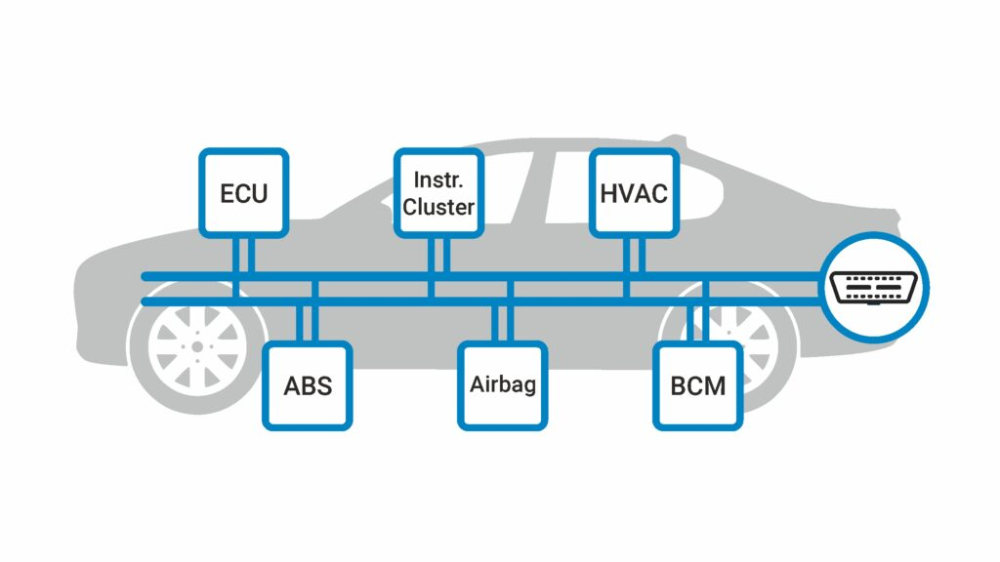
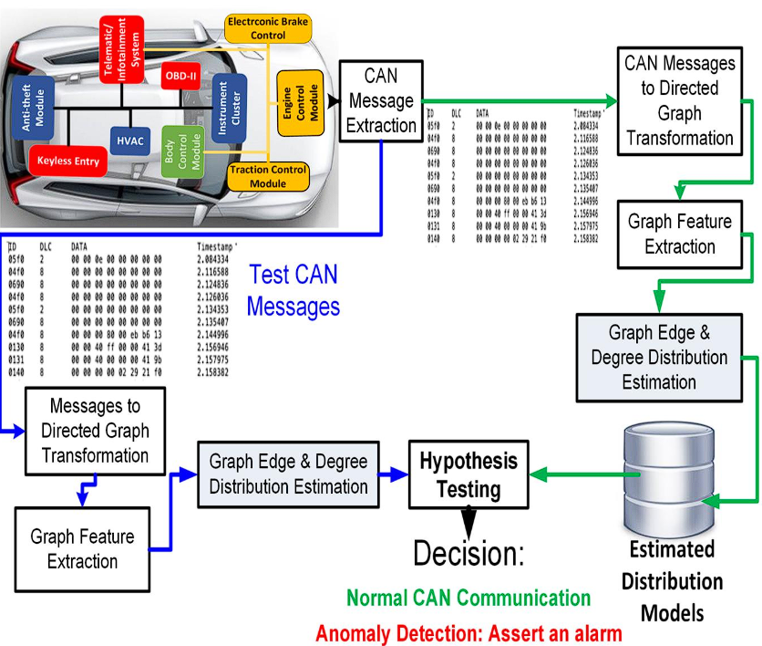
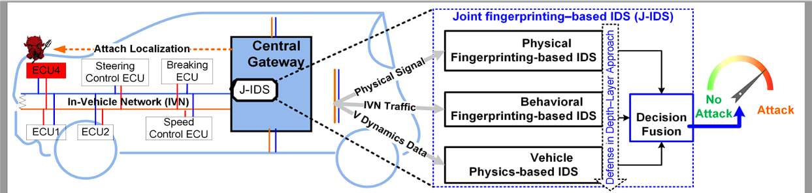

What is CAN data in automotives?
In modern cars, a critical role is played by CAN data, the information exchanged between numerous
electronic control units (ECUs) that act as the car's internal computers. This data, the lifeblood of the car's
intricate electronic network, carries a wide range of information. It can be sensor readings like engine temperature
and speed, data from ABS and tire pressure monitors, or even warnings and control signals to activate brakes or turn on
lights. The beauty of CAN bus, the network facilitating this communication, lies in its efficiency and reliability.
Unlike a bulky wiring harness for each ECU, CAN utilizes just two wires, reducing complexity and weight. Additionally,
CAN bus prioritizes critical messages for smooth operation and is built to withstand harsh automotive environments.
CAN data is essentially the language allowing the car's various "organs" to communicate and work together seamlessly.

What is CAN data visualization in automotives?

CAN data visualization is the process of taking the massive amount of data generated by a car's
sensors and translating it into easy-to-understand visuals. This can be anything from gauges on a dashboard to
complex graphs displayed on a computer screen. By turning raw data into clear visuals, CAN data visualization helps
us understand various aspects of a car's performance, from engine health and fuel efficiency to diagnostic
trouble codes. This information is crucial for everything from driver awareness and safety to engineering improvements
and predictive maintenance. In the future, CAN data visualization can become even more sophisticated, allowing for
real-time adjustments to optimize performance and provide personalized driver feedback. This will not only improve
the driving experience but also play a key role in the development of autonomous vehicles.
How malicious players can harm you with CAN data?
Modern cars rely on a complex communication network called the Controller Area Network (CAN bus) to
coordinate everything from engine performance to entertainment systems. This interconnectedness, while convenient,
creates a potential security vulnerability. Malicious actors could exploit the CAN bus by tampering with the data it
carries. In the worst-case scenario, this could lead to a complete loss of control over the vehicle, causing a
dangerous situation like unintended acceleration or disabled brakes. A less dramatic but still risky attack might
involve flooding the CAN bus with useless data, essentially jamming the system and preventing critical messages from
reaching vital components like airbags or anti-lock brakes. Beyond taking control, attackers could also eavesdrop on
CAN bus data to steal valuable information about your car, such as location, speed, and even driving habits. This
information could be used to target your car for theft or sold on the black market. Fortunately, car manufacturers
are aware of these risks and are implementing security measures like encryption and network segmentation to make it
more difficult for hackers to exploit the CAN bus. It's also important for drivers to stay informed and keep their
car's software updated with the latest security patches to minimize the potential for CAN bus attacks.
Fingerprinting to acquire CAN data

Discover the intricate workings of your vehicle's internal communication network with our CAN data
fingerprinting service. Through meticulous analysis, we decode the unique language of the Controller Area Network (CAN)
messages, identifying key identifiers, data formats, and message frequencies. This process, known as fingerprinting,
provides invaluable insights into your vehicle's systems, enabling precise diagnostics, reverse engineering for
custom applications, and enhanced security analysis against potential threats. Whether you're a researcher, engineer,
or automotive enthusiast, understanding CAN data is essential for unlocking the full potential of modern vehicles.
Trust us to unravel the mysteries of your vehicle's CAN bus, empowering you with knowledge to optimize performance,
diagnose issues, and ensure the utmost security.